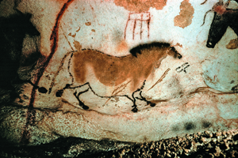
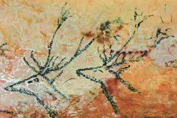

Lezione 1  La preistoria
La preistoria


LASCAUX
La grotta di Lascaux, definita “La Cappella Sistina della preistoria”, presenta un’enorme serie di dipinti rupestri a carattere magico-rituale: l’Homo sapiens vi raffigurava, con una tecnica di straordinaria efficacia, gli animali che intendeva cacciare, in modo da propiziarne la cattura. In questa immagine vediamo un cavallo trafitto da frecce.
MEDIO ORIENTE
L'uomo comincia a non uccidere immediatamente le sue possibili prede, preferendo allevarle per usufruirne poi in modo più mirato: inizia ad allevare pecore e capre. Allo stesso tempo impara a gestire e sfruttare la crescita di alcune piante quali l'orzo, il frumento e i legumi.EUROPA CENTRALE
Tra le nuove specie animali che compaiono con la fine dell’ultima glaciazione troviamo il cervo: in questo graffito a carboncino della grotta di Lascaux vediamo appunto due cervi nell’atto di attraversare un fiume. Attorno al 10 000 a. C., con la fine dell'ultima glaciazione, la flora e la fauna subirono grandi cambiamenti: nelle lande dove brucavano bisonti e renne sorsero grandi foreste temperate, in cui vivevano animali più piccoli come il cervo, la volpe, la lepre.